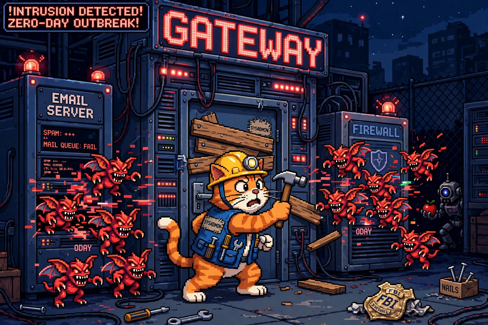

Cyber SOTU: The Week the Front Door Fell Off (Sep 28–Oct 4, 2026)

The cat's boarding up the front door while the gremlins pour through the email server. Also pictured: one spy robot with an apple, one crumpled FBI badge. Just a normal week.
Welcome back to the Cyber SOTU — the State of Cyber, delivered every Sunday. Six stories from the week that mattered, translated into plain English: what happened, why you should care, and what to do about it.
🍎 Apple's "extremely sophisticated" zero-day — reported by Meta
What happened: Apple shipped emergency updates on September 28 for CVE-2026-86950, an out-of-bounds write in CoreGraphics that can lead to arbitrary code execution from a maliciously crafted file. Apple's own words: it "may have been exploited in an extremely sophisticated attack against specific targeted individuals on versions of iOS before iOS 27." The bug was reported by Meta Product Security — Meta, flagging an iPhone zero-day to Apple. The fix is in iOS 26.7.1, iPadOS 26.7.1, macOS Tahoe 26.7.1, and macOS Sequoia 15.8.1. iOS 27 shipped clean.
Why it matters: "Extremely sophisticated attack against specific targeted individuals" is Apple-speak for mercenary spyware — this is the phrasing they use when a commercial surveillance vendor's implant chain gets caught. CoreGraphics parses images and PDFs everywhere, including message previews, so delivery can be low- or zero-interaction. And the cross-vendor irony is delicious: Meta's security team protecting iPhone users.
What to do: Update your iPhone, iPad, and Mac now. If you're still on the 26.x line, 26.7.1 is the one that matters. Source: SecurityWeek →
🌐 Citrix NetScaler zero-days exploited globally — webshells everywhere
What happened: The Citrix NetScaler zero-days (CVE-2026-88771 and CVE-2026-88772, both CVSS 9.5) broke containment this week: exploitation escalated into mass attacks against internet-exposed NetScaler ADC and Gateway appliances, with webshells planted on compromised devices. CISA issued a rare Sunday alert confirming threat actors are "actively exploiting these vulnerabilities globally." A third critical, CVE-2026-88773 (CVSS 9.3, HTTP request smuggling), rode along in the same patch dump.
Why it matters: NetScaler is the front door — VPN, remote access, the works. A mass-exploitation campaign against the front door means the attackers aren't picking locks anymore; they're walking through a doorframe that's missing its door. If your org runs NetScaler, assume-breach until proven otherwise.
What to do: Patch immediately (Citrix's Sunday bulletin), and hunt for post-exploitation artifacts — webshells were confirmed planted. Updating "can be complex and may require downtime" per CISA, which is exactly why attackers love this target. Source: The Register →
🛰️ Cisco SD-WAN Manager zero-day: one crafted request, full admin
What happened: Cisco rolled out urgent patches on September 30 for CVE-2026-76504 (CVSS 9.8), an authentication bypass in Catalyst SD-WAN Manager that's already being exploited in the wild. The bug: improper handling of URI encoding in HTTP requests lets an unauthenticated attacker slip past the API session-auth check and land on the API as the admin user. Every Catalyst SD-WAN Manager deployment is affected regardless of configuration — and there are no workarounds. CISA added it to the KEV catalog with a 3-day federal deadline.
Why it matters: This is a control-plane system — one SD-WAN Manager can orchestrate thousands of branch devices. Admin API access there isn't one compromised box, it's a skeleton key for the entire WAN fabric: rewrite policies, weaken segmentation, push bad configs everywhere at once. And Cisco's second actively-exploited critical in a month (after the perfect-10 ISE flaw) makes it a rough quarter for team blue.
What to do: Upgrade to the fixed release for your train (20.9.10.1, 20.12.8.2, 20.15.6.1, 20.18.4.1, 26.1.2.1, or 26.2.1) — upgrading is the only fix. Before patching, check logs for suspicious requests and hunt with Cisco's published IoCs. Source: SecurityWeek →
📧 The FortiMail zero-day that has NO patch — and today's the federal deadline
What happened: Fortinet disclosed CVE-2026-104286 (CVSS 9.8) on October 1 — a path-traversal plus NULL-byte flaw in FortiMail that lets an unauthenticated attacker write arbitrary files to the email security appliance via crafted HTTP requests. Fortinet confirmed active exploitation. The catch: no fixed build exists yet — every fixed release (8.0.2, 7.6.7, 7.4.9) is listed as "upcoming," so the only defenses are workarounds: disable the IBE feature and pull the management interface off the internet. CISA added it to the KEV catalog and gave federal agencies until October 4 — today — to mitigate.
Why it matters: Your email security gateway is supposed to be the bouncer. This bug turns the bouncer into the open window — and the vendor is telling you the new bouncer hasn't arrived yet. Observed intrusions planted an ld.so.preload hook and rogue binaries, and at least one attack reconfigured mail archiving to exfiltrate data to attacker infrastructure. Also note the clock: three days from KEV listing to federal deadline is CISA's way of screaming.
What to do: If you run FortiMail: disable IBE via the CLI command in Fortinet's advisory (FG-IR-26-175), restrict management access to trusted networks, and hunt with Fortinet's IoCs — including source IPs 79.141.169.187 and 45.129.0.192. Check for the rogue files listed in the advisory. Source: CyberInsider →
🕵️ ShinyHunters vs. the FBI: the Bureau's job portals are still down
What happened: The ShinyHunters extortion group's brazen claimed breach of the FBI kept developing this week. After defacing apply.fbijobs.gov and claiming 2–3 TB of FBI personnel data stolen via an Oracle PeopleSoft zero-day, the FBI confirmed to The Register it is "actively and aggressively investigating" a compromise of the FBIJobs.gov portal and alleged PII impact. Both job portals remain offline, and the Bureau is contacting potentially affected people. The group's stated motive: revenge for an FBI public advisory urging victims not to pay.
Why it matters: An extortion crew hacking the FBI to protect its reputation is a wild escalation — crime-as-a-business so confident it picks a fight with federal law enforcement as a marketing move. For defenders, the practical signal is the same as last week's: PeopleSoft is widely deployed in government, higher ed, and large enterprises, and attackers keep finding ways in. Whether the FBI's point of breach was its own enterprise or a third party is still undetermined.
What to do: Oracle PeopleSoft shops: patch (Oracle's June advisory for CVE-2026-35273 still applies), and don't trust WAF path-blocking alone — this group has already shown it can encode its way around string-based rules. Source: The Register →
🤖 Microsoft smashes an AI-powered phishing empire
What happened: Microsoft's Digital Crimes Unit — its 40th such operation — disrupted EvilTokens, a subscription phishing-as-a-service platform that Microsoft says "used AI at every step of the attack chain." The centerpiece was an AI chatbot that analyzed compromised inboxes to identify trusted relationships, payment flows, and who to impersonate for business email compromise. Scale: 12,000+ compromised inboxes across 10,000+ organizations since its February launch. Microsoft seized 50 websites and disabled 150+ domains under a federal court order; London's Met Police arrested two suspected operators on September 11.
Why it matters: This is the PhaaS endgame: AI doesn't just write the phish, it does the reconnaissance — reading your inbox to figure out who you trust and how money moves in your org, then drafting the impersonation. The scary detail for defenders: stolen access could persist even after a password reset if sessions and tokens weren't revoked. Password rotation does nothing against a stolen OAuth token.
What to do: When responding to suspected account compromise, revoke sessions and tokens — not just the password. And this is your periodic reminder that BEC is still the highest-ROI crime on the internet. Source: AI Affairs →
Your Sunday homework, courtesy of this week's SOTU:
- iPhone / iPad / Mac: update to iOS 26.7.1 or macOS Tahoe 26.7.1 / Sequoia 15.8.1 (CVE-2026-86950)
- Citrix NetScaler ADC/Gateway: emergency patches applied, hunt for webshells
- Cisco Catalyst SD-WAN Manager: upgrade to the fixed release — no workaround exists
- FortiMail: IBE disabled, management interface off the internet, IoCs hunted (federal deadline: today)
- Oracle PeopleSoft: patched — and verify your WAF rules can't be encoded around
- Account compromise response: revoke sessions and tokens, not just passwords
That's the state of cyber for the week of September 28–October 4. The theme: the front door is under siege — gateways, email appliances, and management consoles are where the zero-days live now. Patch the perimeter, then hunt it. See you next Sunday. 🐱
Every Sunday at 7 PM ET, right here and on the mckai.net homepage. Past editions live in the blog under the NEWS tag.